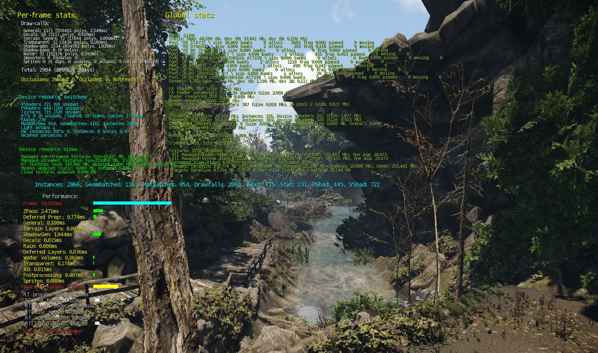
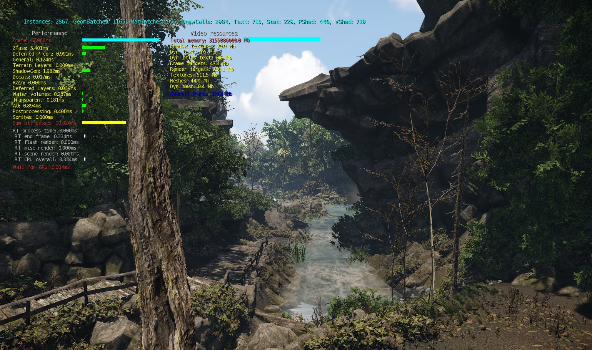
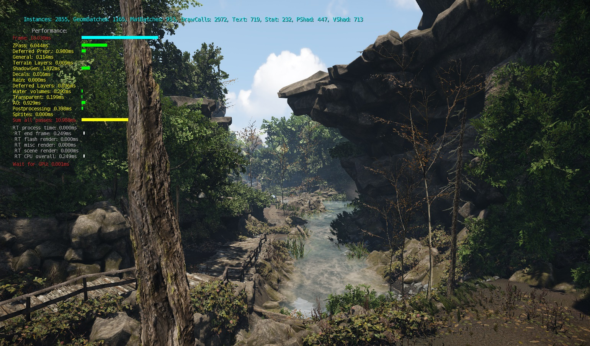
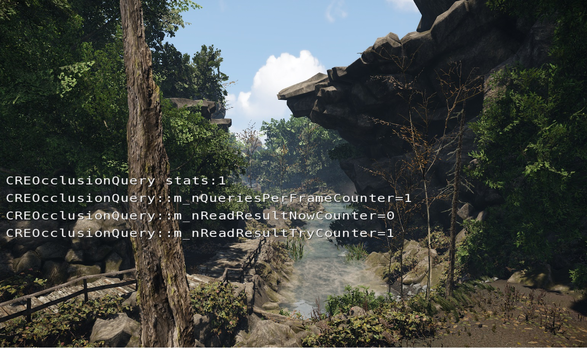
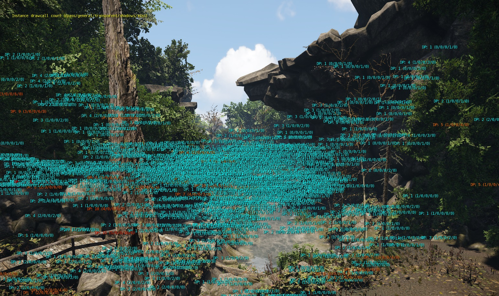
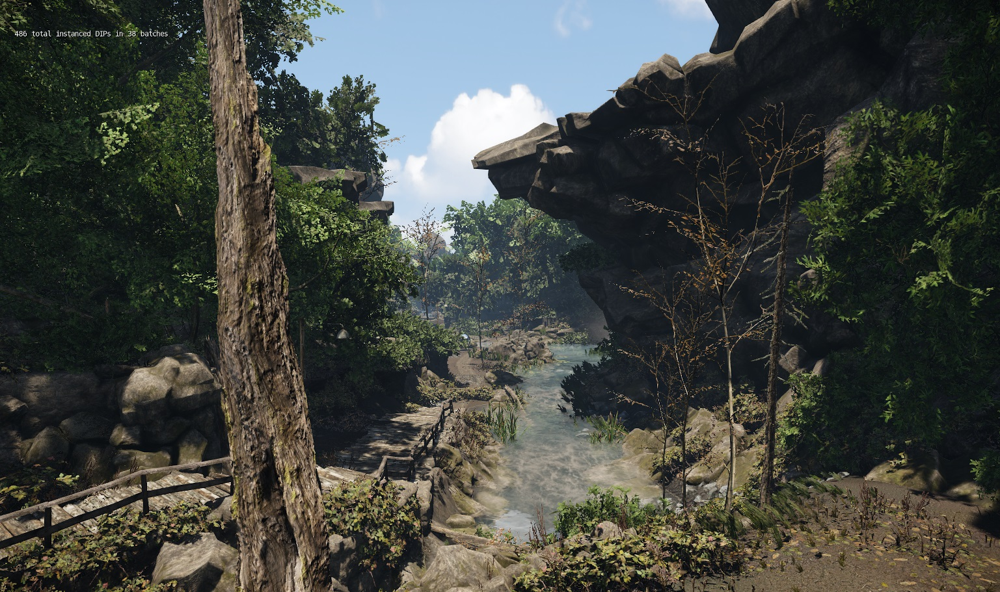
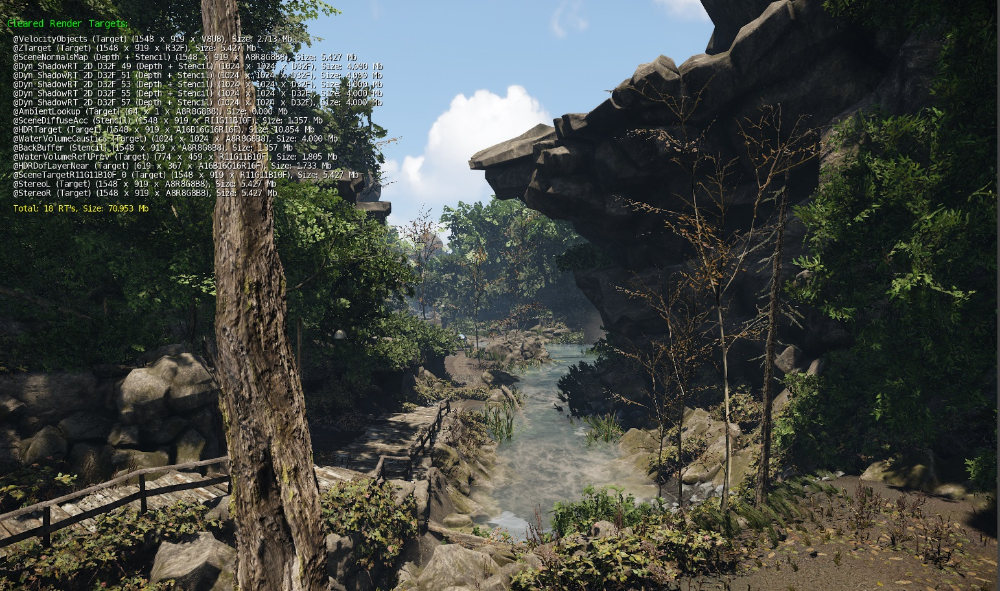

Overview
r_stats is a multi-function Console Variable that contains many debugging tools for the rendering in CRYENGINE.
r_stats 1
Detailed breakdown of the frame statistics. Lists information on Drawcalls, Device resource switching & sizes and also a performance breakdown of the time spent per sub-system that makes up the frame time.

r_stats 3
Breakdown of the frame time split into the various sub-systems. Also lists information on the video memory consumption.

r_stats 4
Same as version 3, but without the video memory information.

r_stats 5
Statistics on the occlusion.

r_stats 6
Displays the drawcall count for each object instance in the scene.
The numbers above each object are broken down into Total DP (zpass, general, transparent, shadows, misc).
Since CRYENGINE 3.8.1, you can also specify a value for r_statsMinDrawCalls to filter out results below the specified value.

r_stats 8
Details information on the total instances in the scene & in how many batches.

r_stats 13
Cleared render targets
